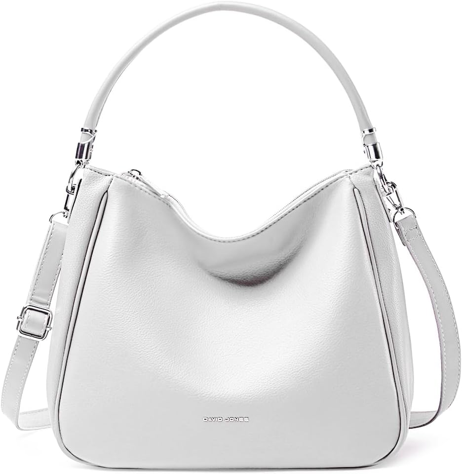

David Jones - Bolso Hobo para Mujer - Bolso de…: el bolso del día 142
Un día cualquiera, hasta que decides que no lo es. El bolso de hoy es el David Jones - Bolso Hobo para Mujer - Bolso de Hombro Tipo Bandolera de Piel Sintética PU - Bolso Tote de Tamaño Mediano con Asa Larga - Moda Clásica Urbana Práctica y Elegante. No es un capricho de escaparate: es el que acompaña la versión más práctica de ti, con 4,3★ de nota media y 579 valoraciones que respaldan la decisión.

Un bolso no cambia tu día. Cambia la manera de entrar en él: con lo que necesitas, sin lo que sobra y con la certeza de que otras 579 personas ya hicieron la misma elección antes que tú. Lo que más repiten sus compradoras: capacidad.